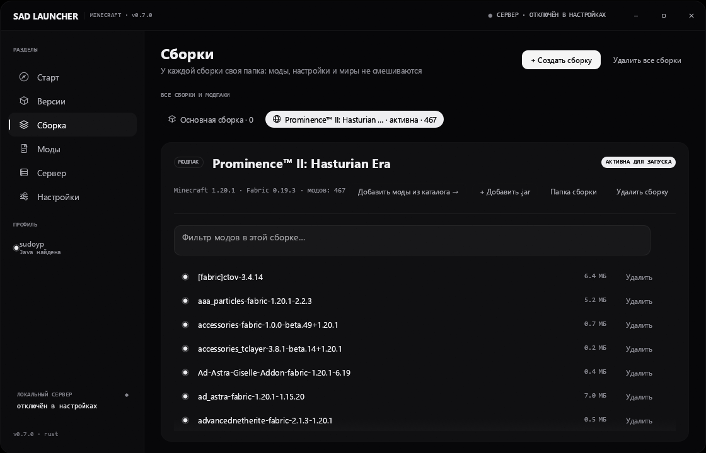

Модпак становится отдельной сборкой
Любой загрузчик и версия Minecraft. Моды, миры и настройки разных паков не смешиваются.

Модпаки в одно нажатие, свой сервер для друзей и Java, которая ставится сама. Без регистрации.
Каталог Modrinth и CurseForge, сборки, сервер и настройки. Чёрно-белый интерфейс без лишних окон.

Архив качается частями в несколько потоков, настройки пака распаковываются прямо в сборку, пока докачиваются моды.
Любой загрузчик и версия Minecraft. Моды, миры и настройки разных паков не смешиваются.

Forge-сервер поднимается кнопкой. Друзья заходят по коду комнаты из пяти цифр.
Нужная версия скачивается при первом запуске сборки. Ничего не надо искать.
Отключает моды не под тот загрузчик и сам докачивает недостающие зависимости.
«мини карта» найдёт Minimap, а «зкщьштутсу», набранное не в той раскладке, найдёт Prominence.
Бесплатно и без регистрации. Установщик сам создаст ярлыки на рабочем столе и в меню «Пуск».
sudo apt install build-essential gitgit clone https://github.com/simsislam89-crypto/sad-launchercd sad-launcher, затем cargo build --release --bin sad-launchertarget/release/sad-launcher. Ярлык в меню приложений лаунчер создаст сам.Готовый файл появится на этой странице.
xcode-select --install. Затем Rust с rustup.rsgit clone https://github.com/simsislam89-crypto/sad-launchercd sad-launcher, затем cargo build --release --bin sad-launchertarget/release/sad-launcher. Java лаунчер скачает сам.Готовый файл появится на этой странице.
Нет. Играть можно по нику: на своём сервере и у друзей в комнате. Ник от 3 до 16 символов.
В папке %APPDATA%\Sad Launcher. Кнопка «Удалить всё» в настройках убирает лаунчер, сборки и ярлыки целиком.
Лаунчер в простое занимает около 5 МБ памяти и сворачивается, пока идёт игра. Игра получает приоритет и дискретную видеокарту.
Нет. Папка прежнего лаунчера переносится при первом запуске, вместе с мирами, сборками и настройками.